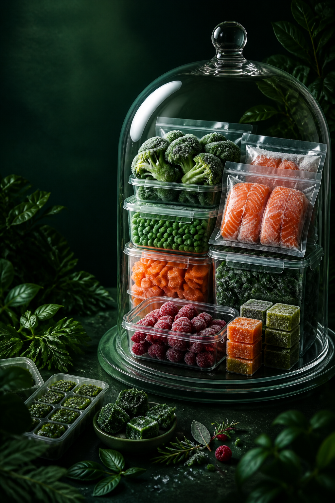

Меньше страха испортить продукты
Понятные правила хранения, качества и безопасной разморозки.
Курс по заготовкам и заморозке
Научитесь спокойно замораживать продукты, делать заготовки впрок, организовывать холодильник и собирать базу еды для всей семьи.

Безопасная заморозкасанитария, сроки, повторная заморозка
Удобная упаковкаконтейнеры, пакеты, маркировка
Порядок домахолодильник, кладовая, запасы
Еда впрокобеды, ужины, детские заготовки
Почему этот курс
Курс собран вокруг бытовой практики: какие продукты можно замораживать, как их готовить, во что упаковывать, как подписывать и как потом размораживать без потери вкуса и текстуры.
Материалы закрывают весь путь: от основ безопасности до готовых блюд, бюджетного меню, детских заготовок и сбалансированных вариантов подачи.
Понятные правила хранения, качества и безопасной разморозки.
Система упаковки и маркировки помогает видеть, что уже есть дома.
Готовая база еды освобождает 2–3 часа в день на ежедневной кухне.
Структура курса
Результат после блока: не будете бояться заморозки и портящихся продуктов, сможете спокойно делать заготовки впрок.
Результат после блока: перестанете тратить деньги на ненужные контейнеры и организуете кухню удобно для себя.
Результат после блока: продукты перестанут обветриваться, протекать и терять вкус после заморозки.
Результат после блока: в холодильнике появится порядок, и вы перестанете забывать, что у вас уже есть дома.
Результат после блока: научитесь сразу понимать, какие продукты ещё можно использовать, а какие уже нет.
Результат после блока: перестанете портить продукты неправильной заморозкой и разморозкой.
Видео-уроки:
Отдельный видео-урок:
Памятки:
Видео-урок:
Презентация:
Материалы:
Результат после блока: освободите себе 2–3 часа в день за счёт готовых заготовок и базы еды дома.
Видео-урок:
Материалы:
Видео-урок:
Материалы:
Видео-урок:
Материалы:
Видео-урок:
Материалы:
Презентация:
Материалы:
Презентация:
Материалы:
Результат после блока: перестанете каждый день готовить с нуля, сократите расходы на продукты и будете тратить меньше сил на кухню.
Что внутри
Правила безопасной заморозки, санитария, повторная заморозка, ошибки хранения и признаки испорченных заготовок.
Пакеты, контейнеры, вакууматоры, наклейки, сроки хранения и простая система подписей без путаницы.
Бланширование, нарезка, сушка, заморозка россыпью, порционная разделка и удаление воздуха.
Виды теста для заморозки, рецепты, правильная разморозка, сырники, оладьи и блинчики без слипания.
Томатные базы, суповые основы, бульоны, котлеты, фрикадельки, плов, тушёное мясо и готовые блюда.
Детские пюре, меню на бюджет, список покупок, полезные заготовки и идеи сбалансированных тарелок.
Тарифы
Самостоятельное прохождение курса в удобном темпе.
Прохождение курса с обратной связью от Хадиджи.
Хадиджа умм Ильяс
Лайфхаки для экономии времени и сил в ежедневных заботах. Проверенные рецепты, которые полюбит вся семья.
Оставить заявку